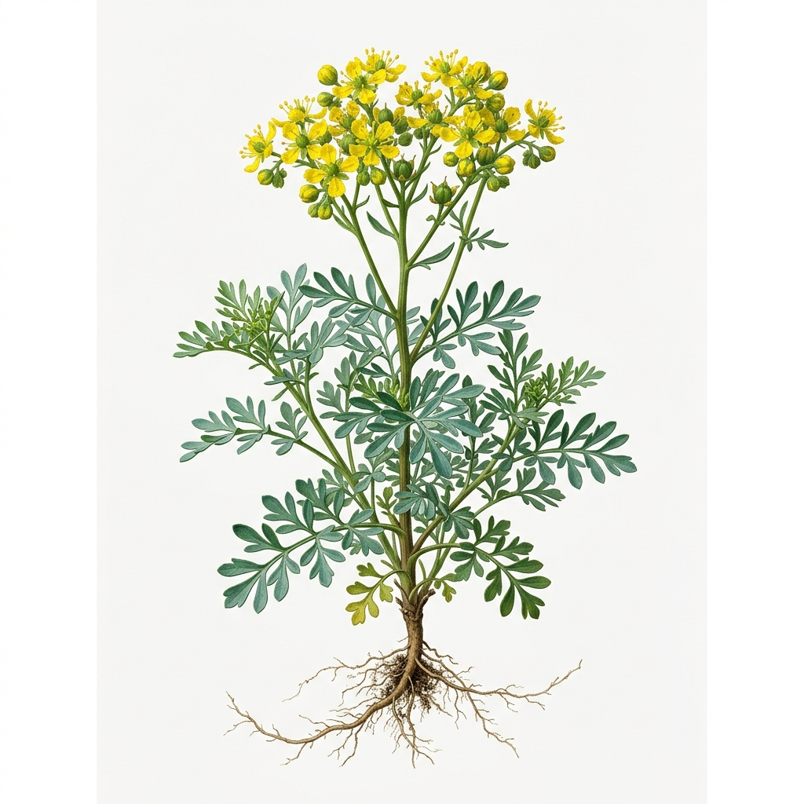
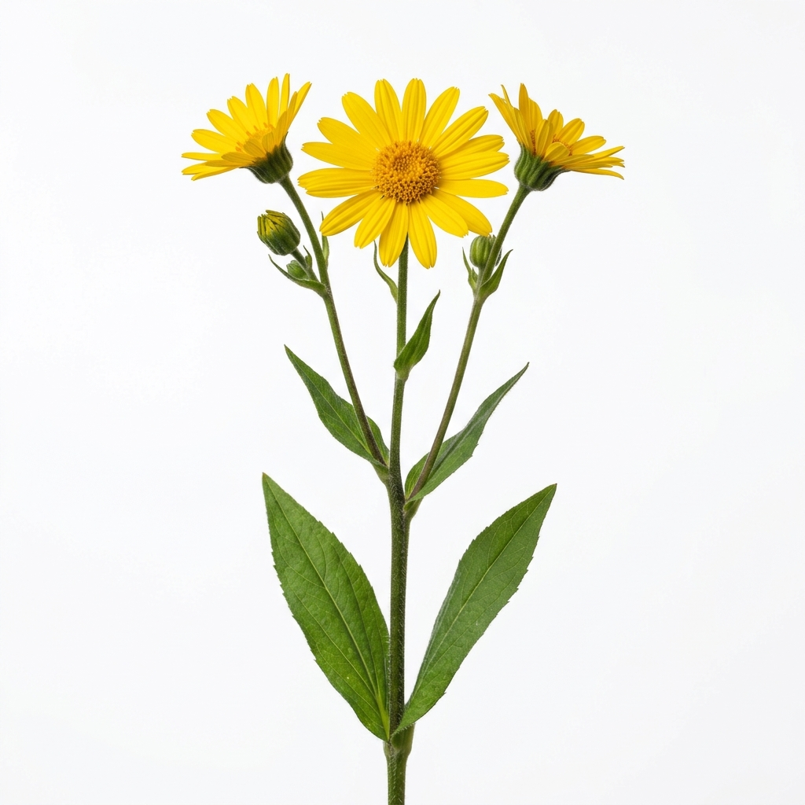
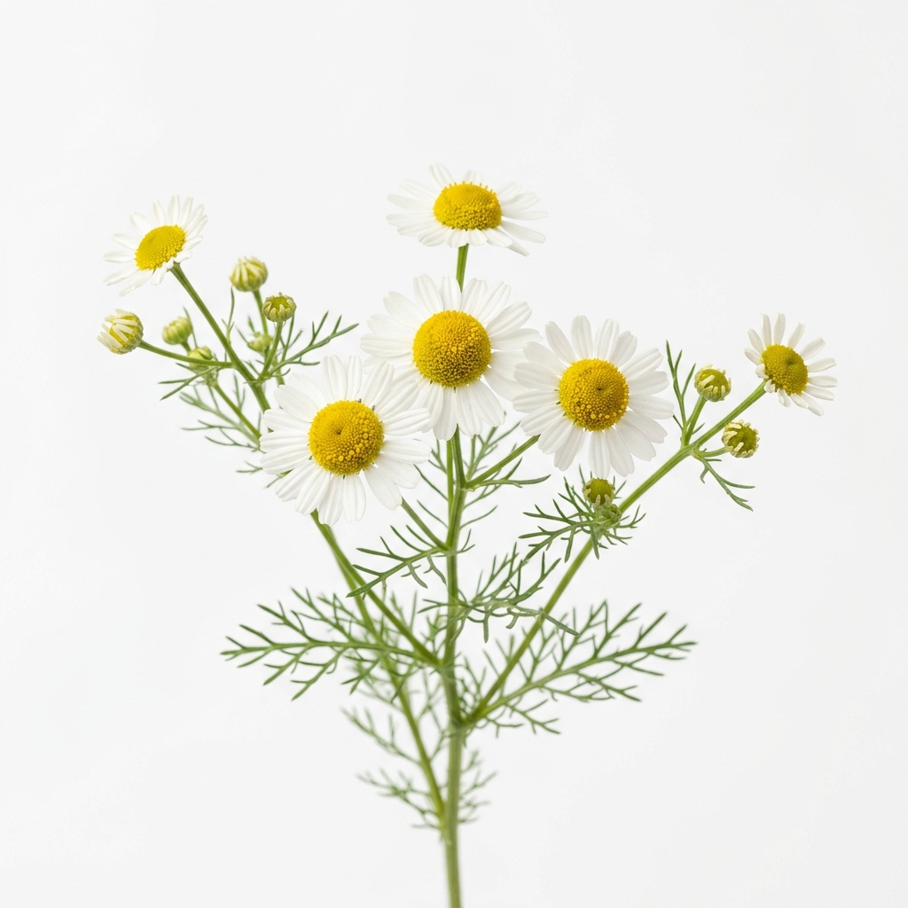
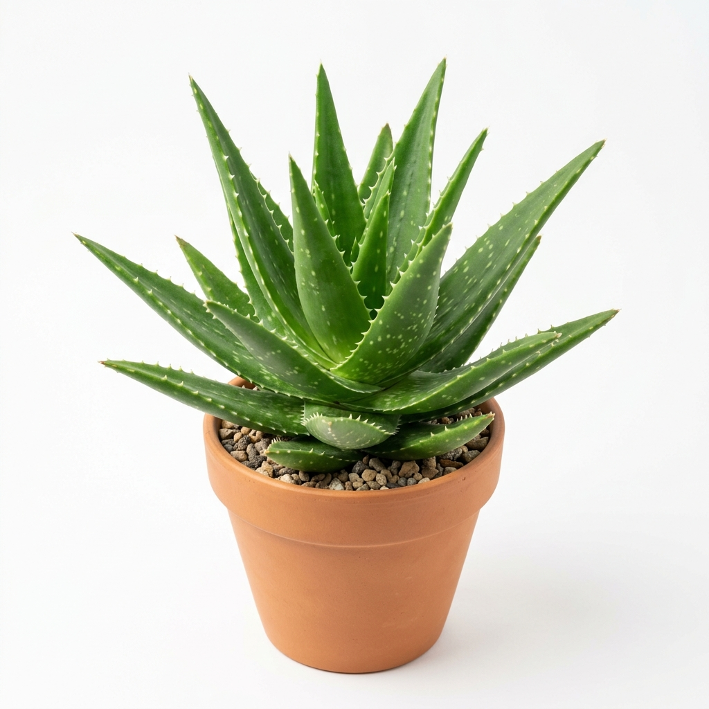
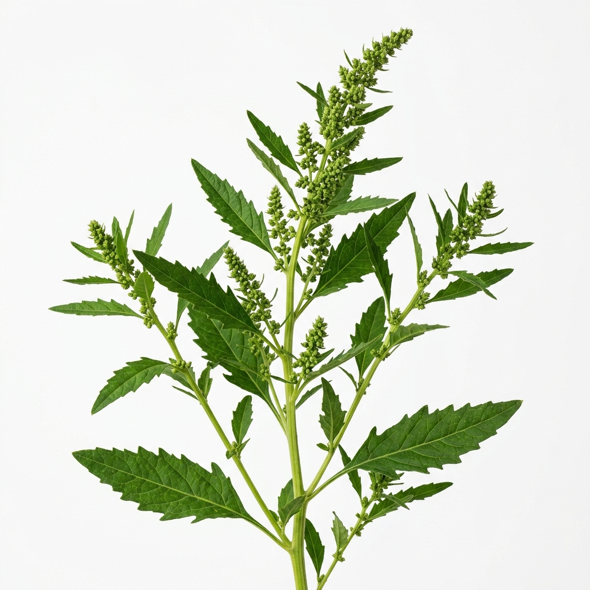
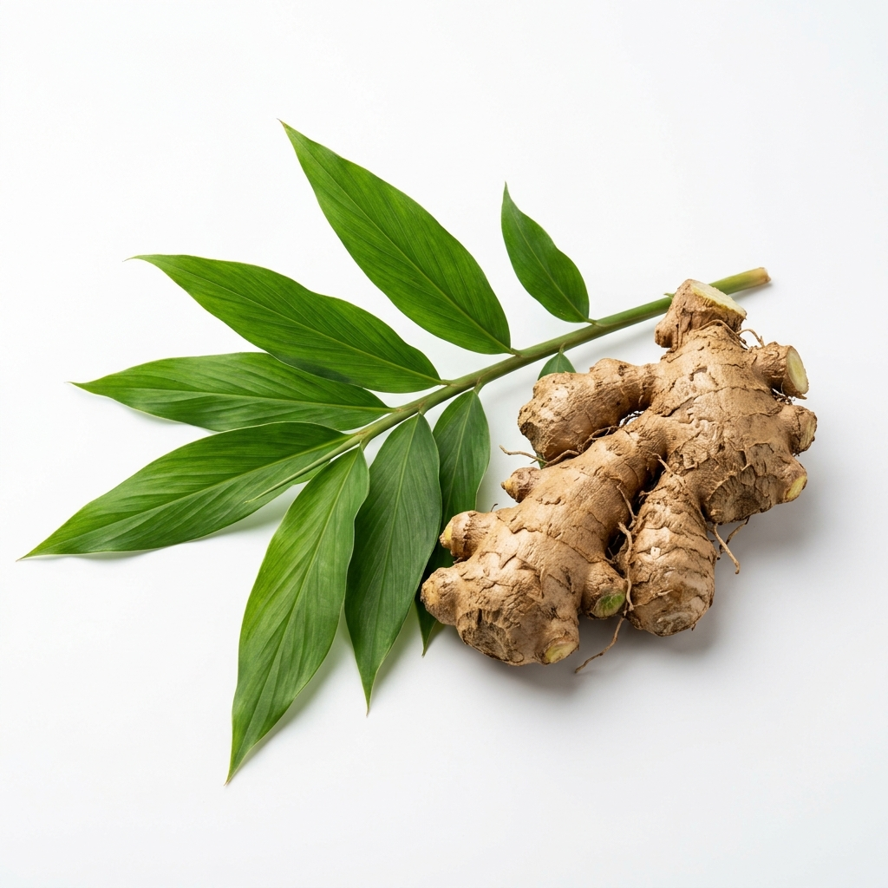

Lo "natural" no siempre es seguro. Evidencia científica sobre el uso de plantas medicinales durante la gestación en México.
El uso de plantas medicinales y productos herbolarios es una práctica profundamente arraigada en la cultura mexicana, especialmente como parte de la medicina tradicional transmitida de generación en generación.
Muchas mujeres recurren a estas alternativas durante el embarazo bajo la creencia de que, al ser "naturales", son completamente seguras. Sin embargo, la evidencia científica indica lo contrario: varias de estas plantas contienen compuestos con actividad farmacológica capaz de producir efectos adversos graves durante la gestación (Alonso Castro et al., 2020).
La ruda (Ruta graveolens) y la árnica (Arnica montana) son las más consumidas habitualmente por gestantes y presentan efectos abortivos, hemorrágicos y tóxicos documentados científicamente.
"Si es natural, no puede hacerle daño a mi bebé."
El origen natural no garantiza seguridad. La cicuta, el acónito y muchas otras plantas son extremadamente tóxicas. Lo que importa es la actividad farmacológica, no el origen.
"Mi abuela la tomó y no le pasó nada. Siempre se ha usado así."
La tradición cultural no equivale a evidencia científica de seguridad. Muchos efectos adversos son subclínicos o se atribuyen a otras causas. La ciencia ha documentado efectos que la observación informal no puede detectar.
"Un té de manzanilla o hierbabuena es inofensivo."
En pequeñas cantidades pueden ser relativamente seguros, pero la manzanilla en grandes dosis puede estimular contracciones uterinas. La dosis y la frecuencia siempre importan.
Identificadas en estudios realizados en México (Alonso Castro et al., 2017, 2020; González-Juárez et al., 2022; Espinoza-Olivares et al., 2023).

⛔ AbortivaAmpliamente usada en medicina tradicional mexicana para "atrasar la menstruación", regular el ciclo o como antiespasmódico. Es la planta más documentada con efectos abortivos en gestantes.
Tés para "bajar la regla", cólicos menstruales, tratamiento de resfriados.
Contiene alcaloides (rutina, bergapteno) y aceites esenciales que estimulan la musculatura uterina.

⛔ TóxicaUsada popularmente para golpes, inflamaciones y dolores musculares. En México se consume en forma de ungüentos, tinturas e infusiones. El uso oral es especialmente peligroso durante el embarazo.
Tés antiinflamatorios, ungüentos para dolor, remedios para "aflojar" el parto.
Contiene helenalina (lactona sesquiterpénica) con efecto uterotónico y hemorrágico.

⚠️ PrecauciónUna de las plantas más consumidas en México. En cantidades moderadas puede ser relativamente segura para náuseas leves. Sin embargo, el uso en grandes dosis o frecuente puede tener efectos uterotónicos.
Tés para náuseas, cólicos, insomnio y problemas digestivos del embarazo.
Azuleno y otros flavonoides pueden estimular contracciones en dosis altas. Puede potenciar anticoagulantes.

⛔ ContraindicadoAunque el gel externo es seguro para la piel, el látex interno (de color amarillo) es un potente laxante con efecto estimulante uterino. No debe consumirse oralmente durante el embarazo.
Jugo de aloe para estreñimiento, desintoxicación, indigestión.
Las antraquinonas del látex (aloína) son laxantes potentes y uterotónicos.

⛔ EvitarPlanta de uso culinario y medicinal en México. Como alimento en pequeñas cantidades puede no representar riesgo, pero su uso medicinal concentrado es peligroso durante el embarazo.
Antiparasitario, digestivo, tés para "limpiar el estómago".
Contiene ascaridol, con potencial abortivo y neurotóxico en dosis medicinales.

⚠️ Dosis limitadaUno de los pocos remedios naturales con cierta evidencia de seguridad y eficacia para las náuseas del embarazo. Sin embargo, dosis elevadas pueden aumentar el riesgo de sangrado.
Tés suaves para náuseas del primer trimestre en dosis ≤1 g/día.
Dosis altas pueden tener efecto anticoagulante e inhibir prostaglandinas.
| Planta | Nombre científico | Uso popular | Efecto adverso documentado | Riesgo |
|---|---|---|---|---|
| Ruda | Ruta graveolens | Regular ciclo menstrual, cólicos | Abortiva, contracciones uterinas, hepatotóxica | Contraindicada |
| Árnica | Arnica montana | Antiinflamatorio, aflojar el parto | Hemorragia, uterotónica, tóxica oral | Contraindicada |
| Aloe vera (látex) | Aloe vera | Estreñimiento, desintoxicación | Contracciones uterinas, diarrea severa | Contraindicada |
| Epazote | Dysphania ambrosioides | Antiparasitario, digestivo | Abortivo, neurotóxico en dosis altas | Contraindicada |
| Manzanilla | Matricaria chamomilla | Náuseas, insomnio, digestión | Uterotónica en dosis altas | Precaución |
| Jengibre | Zingiber officinale | Náuseas del embarazo | Anticoagulante en dosis altas | Dosis limitada |
| Hierbabuena | Mentha spicata | Digestión, náuseas | Mentol: posibles contracciones en altas dosis | Moderación |
Fuentes: Alonso Castro et al., 2017, 2020; González-Juárez et al., 2022; Espinoza-Olivares et al., 2023.
El hecho de que un producto sea de origen natural no garantiza su seguridad, especialmente durante el embarazo, donde cualquier sustancia puede tener un impacto significativo en el desarrollo del feto.
Organismos de salud como la OMS y la COFEPRIS han advertido sobre los riesgos del uso de medicamentos y productos sin supervisión médica, destacando la importancia de consultar a un profesional antes de consumir cualquier sustancia durante la gestación (COFEPRIS, 2024).
El Químico Farmacobiólogo tiene un papel crucial en la orientación de las pacientes gestantes sobre el uso seguro de plantas medicinales, identificando riesgos potenciales e interacciones con medicamentos convencionales.